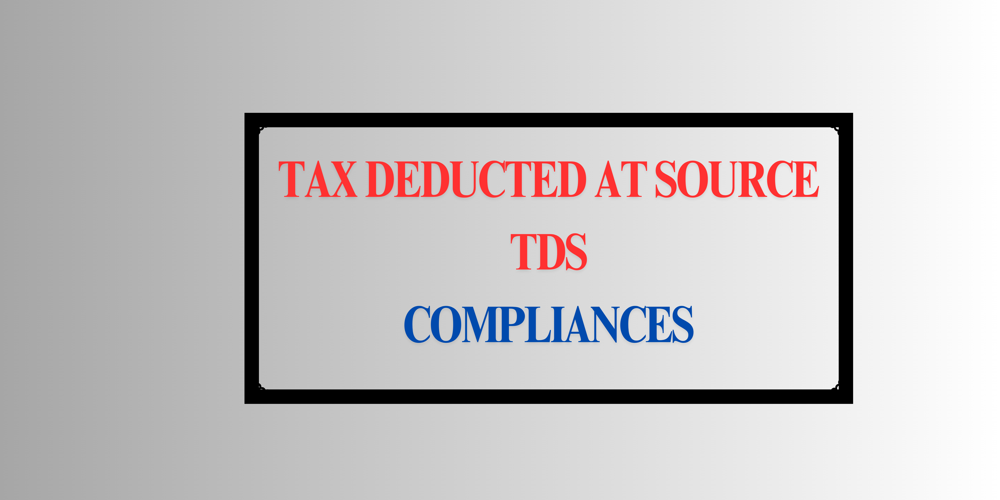

TDS Compliance in Nepal
| Section | Description |
|---|---|
| Introduction to TDS | Overview and significance of TDS in Nepal |
| Concept of TDS | Explanation of TDS deduction and deposit |
| TDS Rates | Current applicable TDS rates in Nepal |
| TDS Deduction Process | Steps and accounting entries for TDS |
| E-TDS Filing Process | Electronic filing and submission process for TDS |
| How to File TDS Return in Nepal | Step-by-step TDS return filing process |
Introduction to TDS
Tax Deducted at Source (TDS) is a tax collection mechanism under which tax is deducted at the point of in come generation or payment. In Nepal, TDS is applied to various transactions to ensure timely tax collection and reduce the risk of tax evasion. TDS payments are governed by Nepal’s Inland Revenue Department (IRD) and must be filed monthly to comply with tax laws.
Concept of TDS (Tax Deducted at Source)
Tax Deducted at Source (TDS) is a mechanism by which tax is collected at the point where income is generated. The payer, such as a company or organization, deducts a specified percentage of tax from payments made to employees, contractors, or service providers before making the payment. This deducted amount is then deposited with the tax authority, the Inland Revenue Department (IRD) in Nepal.
The TDS system ensures steady tax collection for the government while simplifying tax compliance for recipients by collecting taxes on their behalf as income is earned.
Why TDS is Done
The key reasons for implementing TDS are:
- Timely Collection of Revenue: TDS allows the government to collect tax revenue in advance rather than waiting until the end of the financial year.
- Reducing Tax Evasion: TDS minimizes the chances of tax evasion, as taxes are deducted directly from payments at the source.
- Simplified Tax Compliance for Recipients: Since tax is deducted at the source, recipients have reduced tax liabilities at the end of the year.
- Consistent Revenue for the Government: TDS ensures a regular flow of tax revenue, aiding government planning and expenditure.
How the TDS Mechanism Works
In the TDS mechanism, two parties are involved:
- Withholding Agent (Payer): The entity making the payment, responsible for deducting TDS.
- Withholdee (Payee): The entity receiving the payment after TDS deduction.
Let’s illustrate this with an example:
Example: A logistics company, Star Transport, hires a maintenance contractor for vehicle repairs. For the month of Ashad, Star Transport needs to pay the contractor NPR 80,000. According to TDS regulations, the applicable TDS rate on maintenance services is 5%. Star Transport will deduct NPR 4,000 (5% of 80,000) as TDS and pay the contractor NPR 76,000. Star Transport will then deposit the TDS amount of NPR 4,000 with the IRD and file a TDS return showing that TDS was deducted on this payment.
Responsibilities of the Payer (Star Transport in this example)
- Calculate and deduct TDS at the specified rate on relevant transactions.
- Deposit the collected TDS with the IRD within the due date, typically by the 25th of the following month.
- File a TDS return detailing the transaction and payee information by the due date (25th of the following month).
Examples of TDS Deductions in Different Scenarios
Example 1: TDS on Consultant Fees
Suppose a company hires a freelance consultant and agrees to pay a fee of NPR 70,000. The TDS rate on professional fees is 15%.
- Gross Fee: NPR 70,000
- TDS Rate: 15%
- TDS Amount: \( 70,000 \times 0.15 = 10,500 \)
The company will deduct NPR 10,500 from the consultant’s payment and pay the remaining NPR 59,500. The deducted NPR 10,500 is deposited with the IRD on behalf of the consultant.
Example 2: TDS on Equipment Rental
Imagine a company rents equipment from a vendor for a project, with a total rental cost of NPR 120,000. The applicable TDS rate on rental expenses is 10%.
- Gross Rental Cost: NPR 120,000
- TDS Rate: 10%
- TDS Amount: \( 120,000 \times 0.10 = 12,000 \)
The company will deduct NPR 12,000 as TDS, paying the vendor NPR 108,000. The TDS of NPR 12,000 is deposited with the IRD.
Accounting Entry for TDS Deduction
For Consultant Fee TDS Deduction:
Consulting Fee Expense Dr 70,000
To TDS Payable 10,500
To Cash/Bank 59,500
For Equipment Rental TDS Deduction:
Equipment Rental Expense Dr 120,000
To TDS Payable 12,000
To Cash/Bank 108,000
In both cases, “TDS Payable” represents the amount that the company will remit to the IRD on behalf of the recipient (consultant or vendor). TDS simplifies compliance by ensuring that taxes are collected at the source, contributing to a streamlined tax system for both payers and payees.
TDS Deduction Process
The TDS process in Nepal involves calculating, deducting, depositing, and filing TDS returns by the 25th of the following month. The steps are as follows:
- Calculate TDS based on applicable rate for the transaction type.
- Deduct TDS from payment and record it in accounts payable.
- Deposit the deducted TDS amount to the IRD by visiting authorized banks or using the online IRD portal.
Accounting Entry for TDS Deduction
When TDS is deducted, the following accounting entry is recorded:
Rent Expense Account Dr 100,000
TDS Payable Cr 10,000
Cash/Bank Cr 90,000
In this example, Rs. 10,000 is the TDS deducted on a Rs. 100,000 rent payment.
E-TDS Filing Process
E-TDS filing in Nepal is conducted online through the IRD's taxpayer portal. The e-TDS process helps streamline TDS compliance and includes the following steps:
- Login to the IRD Portal https://taxpayerportal.ird.gov.np/taxpayer/app.html: Use your PAN as your login ID.
- Generate Submission Number: Select "E-TDS" and fill in the required form to obtain a submission number.
- Enter Transaction Details: Fill in the TDS transaction details, including payee PAN, amount, and TDS amount deducted.
- Submit Voucher Details: Match the details with the deposit voucher and submit for final reconciliation.
- Confirm and Submit: Review the return and submit it to complete the e-TDS filing.
[Images illustrating the IRD portal steps for e-TDS filing can be included here]
How to File TDS Return in Nepal
Filing a TDS return is essential for a business to comply with the tax regulation as per the Income Tax Act. It is also essential to obtain a Tax Clearance Certificate from the Inland Revenue Department (IRD) in Nepal. Follow the steps below to file a TDS return:
Step 2: Enter Transaction Details
In this step, you’ll enter the details of each transaction where TDS was deducted. Refer to the table below for examples of various types of transactions and their respective revenue codes.
| Transaction Type | Revenue Code | Gross Payment (NPR) | TDS Rate | TDS Amount (NPR) | Example |
|---|---|---|---|---|---|
| Salary | 11112 | 50,000 | 15% | 7,500 | Monthly employee salary with TDS deduction |
| Audit Fee | 11134 | 100,000 | 10% | 10,000 | Annual audit fee payment with TDS deduction |
| Service Fee | 11134 | 30,000 | 1.5% | 450 | Consultancy service fee with TDS deduction |
| Rent | 11131 | 60,000 | 10% | 6,000 | Monthly office rent with TDS deduction |
After entering each transaction, click "Add" to include additional transactions or upload a batch file if needed. Once all entries are complete, click "Save".
Step 3: Enter Voucher Details for TDS Deposit
Once the TDS amount is deducted, the payer (withholding agent) must deposit this amount with the Inland Revenue Department (IRD) by the 25th of the following month. The TDS deposit can be done in two ways:
- Bank Deposit: Visit a nearby authorized bank (e.g., Rashtriya Banijya Bank, Nepal Bank Limited, Agriculture Development Bank) and deposit the TDS amount in cash.
- Online Deposit: Use the IRD Taxpayer Portal for an online deposit. Follow the steps below for online payment.
Step-by-Step Process for Depositing TDS Online
- Login to the IRD Taxpayer Portal
Go to the IRD Taxpayer Portal and log in using your ID and Password. Your PAN number will serve as your ID. If you don’t have login credentials, visit your local revenue department to request them.
- Access the Payment Voucher Section
Once logged in, click on "Payment Voucher" in the portal. This will open a form where you will enter the details for the TDS deposit.
- Fill in the Payment Voucher Details
Complete each field in the form as follows:
- Select Bank: Choose the bank where you want to deposit the TDS amount. The list of available banks may vary based on your location.
- Tax Type: Since TDS is part of income tax, select ‘आय कर’ (Income Tax) in the first column.
- Choose the Appropriate Revenue Code: Carefully select the revenue code that corresponds to the type of transaction for which TDS was deducted. Below are some common revenue codes:
Revenue Code Usage 11111 Income Tax relating to an individual or proprietorship firm 11112 TDS on Salary 11113 Capital Gain Tax for Individuals 11121 Income Tax for Government Institutions 11122 Income Tax for Public Limited Companies 11123 Income Tax for Private Limited Companies 11131 TDS on Rent 11132 TDS on Interest 11133 TDS on Dividends 11134 Income Tax on Other Investments 11211 Social Security Tax on Salary Example: If depositing TDS on salary, select 11112. For rent, select 11131.
- Advance Tax Deduction: Since we’re depositing TDS deducted on certain transactions, select ‘अग्रिम कर कट्टी’ (Advance Tax Deduction).
- Enter TDS Amount: Specify the TDS amount to be deposited.
Example: If TDS of NPR 10,000 was deducted on a rent payment, enter 10,000 in this field.
- Select Fiscal Year: Choose the fiscal year for which TDS was deducted.
Example: For TDS deducted in Ashad 2078, select fiscal year 2077/78.
- Confirm TDS Deposit: Select ‘हो’ (Yes) to confirm that this is a TDS deposit.
- Generate Transaction Code
After filling out the form, click on “Generate Transaction Code” located at the bottom left corner of the screen. A confirmation window will appear. Click “Confirm” to generate the transaction code, which will redirect you to the payment gateway of ConnectIPS.
- Complete the Payment
You can either:
- Print the voucher and visit a branch of the bank you selected to deposit the TDS amount in cash.
- Or complete the payment online using your ConnectIPS login credentials. Online payments usually process within minutes, while bank deposits may take 1-2 days to complete.
This step ensures that the TDS amount is properly deposited with the IRD, meeting the compliance requirements and preventing any penalties.
Next, enter the details of the voucher used for depositing the TDS amount. Ensure that each entry aligns with the correct transaction type and revenue code.
| Field | Description | Example |
|---|---|---|
| Transaction Type | Select the type of transaction for the TDS deposit | Salary, Rent, Audit Fee |
| Revenue Code | Select the appropriate revenue code matching the transaction | 11112 for Salary, 11131 for Rent, 11134 for Service Fee |
| Voucher Number | Enter the unique voucher or receipt number for the payment | VCH001234 |
| Deposit Method | Select the method used to deposit the TDS (e.g., Bank, Online) | Online Payment |
| Deposit Date | Date of TDS deposit (in B.S. or A.D.) | 2079/12/01 (B.S.) |
| Branch/Office | Specify the bank branch or Tax Office where the TDS was deposited | Nepal Bank Limited, Kathmandu |
| TDS Amount | The total TDS amount deposited for the transaction | 10,000 NPR |
Ensure all voucher details reconcile with the IRD’s records before final submission. Once reconciled, click "Submit" to complete the filing.
Step 4: Submit the TDS Return
Once all details have been entered and verified, click on "Submit" in the transaction entry form. Double-check the information before final submission.
Step 5: Self-Verify the Return
After submission, self-verify the return as follows:
- Log back into the IRD Taxpayer Portal using your ID and password.
- Select the “Verification” option and choose the specific return to verify.
- Enter the submission number and confirm the details.
- Once verified, you can preview, print, or save the return in PDF format.
What are Penalties for Late TDS Filing?
Timely TDS filing is crucial to avoid penalties and maintain good standing with tax authorities. Below are the key penalties associated with late TDS filing in Nepal:
| Penalty Type | Penalty Rate/Amount | Description |
|---|---|---|
| Late Deduction Penalty | 1.5% per month | Applied on the amount of TDS not deducted. |
| Late Deposit Interest | 15% per annum | Applied on the amount of TDS deducted but not deposited. |
| Late Filing Penalty | 2.5% per annum | Charged for each month after the filing due date. |
| Incorrect Information Penalty | Up to NPR 1,000 per instance | Penalty for each instance of incorrect information submitted. |
| Prosecution for Serious Offenses | Up to 1 year imprisonment | For willful non-compliance with TDS obligations. |
Example Case
Consider a company, XYZ Pvt. Ltd., that deducted TDS of NPR 20,000 on a service payment but failed to deposit the amount on time:
- Late Deposit Interest: For a delay of 2 months, the penalty would be:
( 20,000 * 15% * 2 / 12) = 500 NPR - Late Filing Penalty: If the filing is delayed by 15 days, the penalty would be:
( 20,000 * 2.5% * 1 / 12) = 42 NPR
Therefore, XYZ Pvt. Ltd. would incur a total penalty and interest of NPR 542 for the delayed TDS deposit and filing. This example illustrates how quickly penalties can add up, emphasizing the importance of timely compliance.
Disclaimer on TDS Rates
Note that TDS rates in Nepal are subject to change annually based on the government’s fiscal budget. For the latest TDS rates, consult the official IRD website or check the latest TDS rates on Company Khata.
Conclusion
Adhering to TDS regulations is essential for maintaining compliance with the tax authorities in Nepal. Understanding TDS deductions, deposits, filing deadlines, and penalties will help businesses avoid fines and legal complications. By managing TDS obligations properly, businesses contribute to transparent financial practices and support the country's tax system.